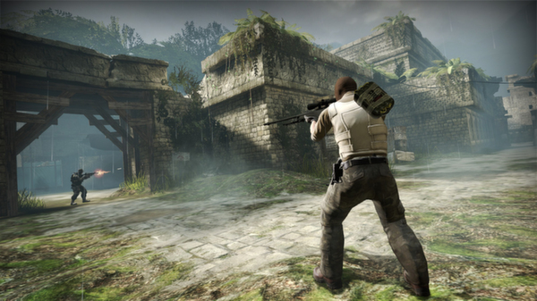

Counter-Strike: Global Offensive
Sobre
Counter-Strike: Global Offensive (CS: GO) expandirá na jogabilidade de ação baseada em equipes na qual foi pioneiro quando foi lançado há 12 anos.
CS: GO contém novos mapas, personagens e armas, além de conter versões atualizadas de conteúdos do CS clássico (como de_dust2). Além disso, CS: GO introduzirá novos modos de jogo, criação de partidas (matchmaking), placares de líderes e mais.
"Counter-Strike surpreendeu a indústria de jogos quando o improvável MOD virou o jogo de ação online para PC mais jogado no mundo quase imediatamente após seu lançamento em agosto de 1999," disse Doug Lombardi na Valve. "Pelos últimos 12 anos, ele continuou sendo um dos jogos mais jogados no mundo, manteve destaque em torneios competitivos de jogos e a franquia vendeu mais de 26 milhões de cópias no mundo todo. CS: GO promete expandir na jogabilidade premiada de CS' e permitir seu acesso por jogadores não só no PC, mas também em consoles de última geração e no Mac."
Onde comprar
Imagens
 |
 |  |